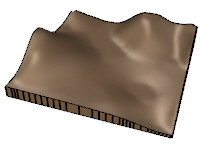

Dove posso trovare questo comando?
laTerreno
Icona:
Clic con il tasto sinistro del mouse su  [clic prolungato]
[clic prolungato]
Barra degli strumenti: Oggetti di Lands/Terreno

Menu:
I terreni di Lands Design sono mesh topografiche create sollevando una superficie da curve 3D, linee di contorno o nuvole di punti.
Dopo aver eseguito il comando laTerreno, appare la finestra di dialogo di inserimento del terreno. Questa finestra mostra le opzioni di base dell'oggetto terreno in due pannelli.
Procedimento:
Viene creato l'oggetto terreno sul modello.

Finestra di dialogo di inserimento dell'oggetto terreno.

I terreni possono essere creati da vari tipi di dati di input.
I terreni presentano gli stessi punti di controllo delle curve utilizzate per crearli e le curve usate per eseguire operazioni sui terreni (come i comandi laTerrenoAggiungiForo, laterrenoAggiungiScavoRiporto, ecc.). Inoltre, accanto a ciascuna curva appare una freccia di controllo dello spostamento per spostare l'intera curva.
I punti di controllo dei terreni vengono attivati automaticamente durante la selezione individuale dei terreni. Per attivare uno o più punti di controllo dell'oggetto terreno, basta selezionare il terreno ed eseguire il comando PuntiOn o premere il tasto F10. Per disattivare i punti di controllo, premere il tasto Esc o eseguire il comando PuntiOff.
I punti di controllo della geometria usata per creare il terreno possono essere disattivati singolarmente dal pannello relativo ai dati di input, nella sezione delle proprietà del pannello di modifica.

Le opzioni e i parametri relativi all'inserimento del terreno vengono divisi in vari pannelli e sono disponibili da diverse finestre di dialogo:
Attributi generali per l'oggetto terreno: Nome, Colore, Codice e Parola chiave.
Algoritmo di generazione: Lands Design utilizza il metodo di Triangolazione di Delaunay per creare terreni. Si tratta di un popolare algoritmo per la generazione di terreni che realizza una triangolazione ottima con i punti il cui valore di elevazione è noto.
I terreni possono essere creati usando direttamente le facce della triangolazione oppure adattare una griglia alla forma ottenuta dopo la triangolazione, in modo da ottenere una superficie uniforme.
Griglia rett. adattata alla triangolazione: quando questa opzione è attiva, è possibile controllare i seguenti parametri.
Altezza della base:
Questo pannello è suddiviso due parti. La parte sinistra mostra l'elenco dei dati di input (curve o punti), usato per creare il terreno, e le operazioni applicate per modificarlo. La parte destra mostra i parametri disponibili per ciascuna selezione.
Ciascuna curva e operazione può essere selezionata o rimossa singolarmente dall'elenco; quindi il terreno verrà ricalcolato.
Equidistanza tra le curve di livello: esistono due opzioni per creare le curve di livello del terreno per la rappresentazione 2D.
Aspetto: impostazioni di rappresentazione 2D per le curve di livello del terreno. È possibile definire i contorni indicizzati in base a un intervallo numerico di contorni, aggiungere testi e assegnare loro diverse proprietà di linea.
Esistono opzioni di modifica per l'oggetto terreno, disponibili nell' di modifica del pannello di modifica:
Tutti i comandi per creare, modifica ed eseguire operazioni sui terreni si trovano nella barra degli strumenti di Lands Terrain.
Lands Design offre diverse visualizzazioni 2D e 3D di terreni simultanee sul modello. Il numero di curve di livello della rappresentazione 2D dipende dalle impostazioni delle curve di livello.

|

|
| Rappresentazione 2D del terreno | Rappresentazione 3D del terreno |